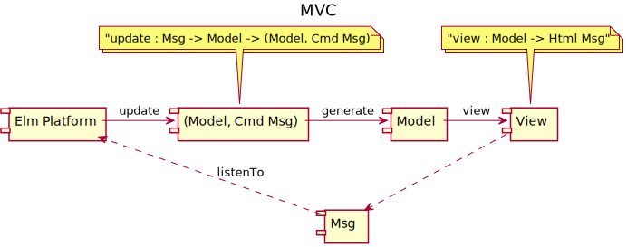
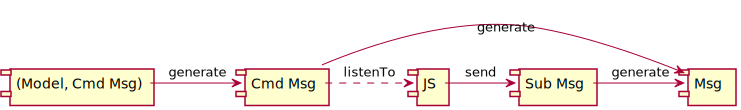
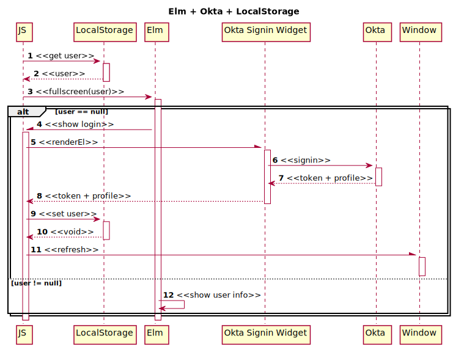

README
1 Some concepts
- Tasks, API, Release Notes
- Subscription
- `Cmd`
- port, JS interop
2 Understand Elm
view : Model -> Html msgis one direction from Model to ViewHtml msgmeans View could generateMsgandupdate: Msg -> Model -> Modelwill turn it into an new Modelinitcreate an initalModelModelis actually sort ofState


3 TODO [0/1]
[ ]pure ELM by creating FFI OktaSignin ?
4 Implementation Details
4.1 Approach 1
